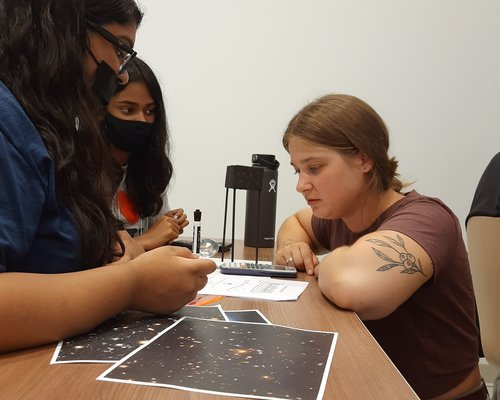
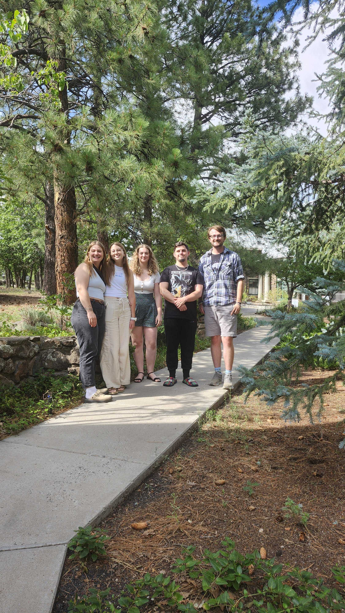

Teaching


Teaching Philosophy
My teaching philosophy is grounded in practicing active learning techniques, and fostering an atmosphere of trust and community in my classroom, while also prioritizing classroom practices which promote diversity, equity, and inclusion. I am also very deliberate about the environment that I create for my students. Informed by ludic pedagogy, which emphasizes playfulness and joy in learning, I work to make my classroom a light-hearted and low-stress place. I view rigor and engagement as complementary rather than competing goals. Transforming my classroom into a place that students feel comfortable enough to participate in some light-hearted fun not only boosts their motivation to learn, but it also improves their ability to learn. A light-hearted and playful classroom environment is particularly important for both introductory and advanced (astro)physics classes because it helps students maintain resilience when they struggle with new concepts, which in turn produces increased levels of academic performance.
Courses Taught
My experience with active learning is informed by my own experiences as an instructor and as a student in active learning classrooms, as well as formal training from the Faculty Teaching Institute and the University of Toronto's Teaching Assistant Training Program. I have employed active learning in my classroom as the instructor of record for my introductory astronomy course with the Rochester Education Justice Initiative (REJI), which offers college courses to incarcerated students in nearby state correctional facilities, as well as during TA appointments at the University of Toronto. At the University of Toronto, non-major introductory astronomy courses are large: there were up to 1,500 students for AST 101 and 300 students for AST 251. As a TA I gained valuable experience with the logistics of operating large-scale introductory courses, such as creating assignments using online classroom tools (e.g. canvas) and coordinating and completing marking for physical mid-term and final exams.
Inclusive Teaching and Outreach
I am committed to making physics and astronomy accessible to students from a wide range of backgrounds. I have experience teaching in non-traditional educational settings, including working with incarcerated students, where flexibility, clarity, and empathy are especially important.
These experiences have shaped how I think about teaching more broadly. They have reinforced the importance of meeting students where they are, designing materials that are accessible without sacrificing rigor, and creating a classroom environment where all students feel that they belong in science.
Mentorship
Being the first in my family to attend post-secondary education has given me a huge appreciation for the influence that mentorship can have over a student's academic and personal trajectories. The advice and guidance that I was given by thoughtful mentors fundamentally altered my academic path as well as my worldview. Beyond my personal experience, quality mentorship is critical for college student success, particularly for students from underrepresented or marginalized backgrounds.
I approach mentorship with intentionality and reflection. My first priority with mentees is to build open, trusting relationships by being honest, approachable, and willing to admit what I do not know. At the same time, I continuously evaluate how I can better support my mentees and what behaviors I model for them.Listening is also central to my mentoreing practice. I do not see a mentor-mentee relationship as a one-way transfer of information: the perspective of the mentee contains just as much insight as that of the mentor. With my students, I also emphasize that there is no single ``right way" to pursue their education or research, and I encourage students to define success on their own terms.
By centering students’ experiences, I aim to create inclusive, supportive environments, particularly for those navigating systemic barriers. My role as a mentor is to be a person who my students can rely on to listen, help or offer advice where possible, or connect them with existing resources that can get them the support they need if my own ability falls short.
I have mentored undergraduate students on research projects in astrophysics, including work that has led to conference presentations and publications. In mentorship, I focus on helping students develop independence while providing the structure and support they need to succeed.
This includes guiding students through the research process—from formulating questions, to debugging code, to communicating results—and helping them build confidence in their ability to contribute to scientific research.